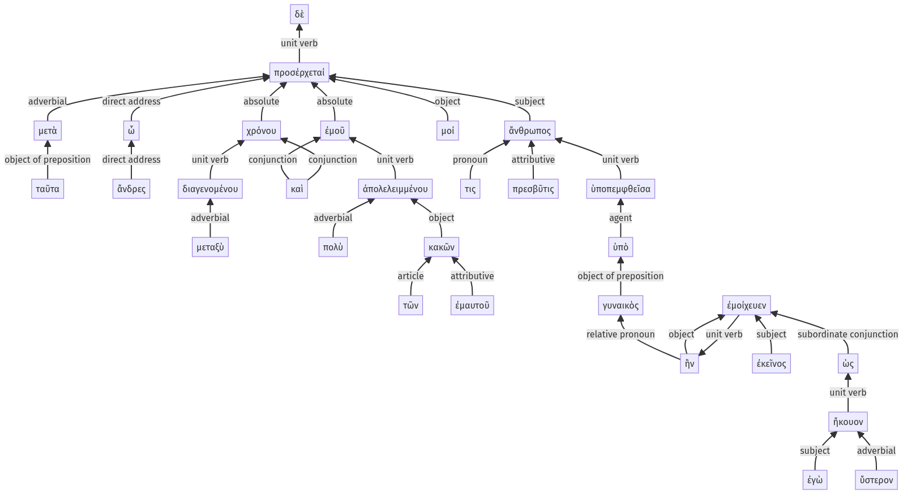

Lysias, Oration 1, 1.15.1-1.15.30a
1.14.54-1.14.66a | 1.15.31-1.15.50a
Sentence 36
1.15.1-1.15.30a
μετὰ δὲ ταῦτα, ὦ ἄνδρες, χρόνου μεταξὺ διαγενομένου καὶ ἐμοῦ πολὺ ἀπολελειμμένου τῶν ἐμαυτοῦ κακῶν, προσέρχεταί μοί τις πρεσβῦτις ἄνθρωπος, ὑπὸ γυναικὸς ὑποπεμφθεῖσα ἣν ἐκεῖνος ἐμοίχευεν, ὡς ἐγὼ ὕστερον ἤκουον:
1 μετὰ ταῦτα ὦ ἄνδρες
2 χρόνου μεταξὺ διαγενομένου
2 καὶ ἐμοῦ πολὺ ἀπολελειμμένου τῶν ἐμαυτοῦ κακῶν
1 προσέρχεταί μοί τις πρεσβῦτις ἄνθρωπος
2 ὑπὸ γυναικὸς ὑποπεμφθεῖσα
3 ἣν ἐκεῖνος ἐμοίχευεν
4 ὡς ἐγὼ ὕστερον ἤκουον
μετὰ δὲ ταῦτα, ὦ ἄνδρες, χρόνου μεταξὺ διαγενομένου καὶ ἐμοῦ πολὺ ἀπολελειμμένου τῶν ἐμαυτοῦ κακῶν, προσέρχεταί μοί τις πρεσβῦτις ἄνθρωπος, ὑπὸ γυναικὸς ὑποπεμφθεῖσα ἣν ἐκεῖνος ἐμοίχευεν, ὡς ἐγὼ ὕστερον ἤκουον:
Highlighting:
- connecting words
- unit verb
- subject
- object
Color code:
- Independent clause (level 1, transitive verb)
- circumstantial participle (level 2, intransitive verb)
- circumstantial participle (level 2, transitive verb)
- circumstantial participle (level 2, transitive verb)
- subordinate clause (level 3, transitive verb)
- subordinate clause (level 4, transitive verb)
